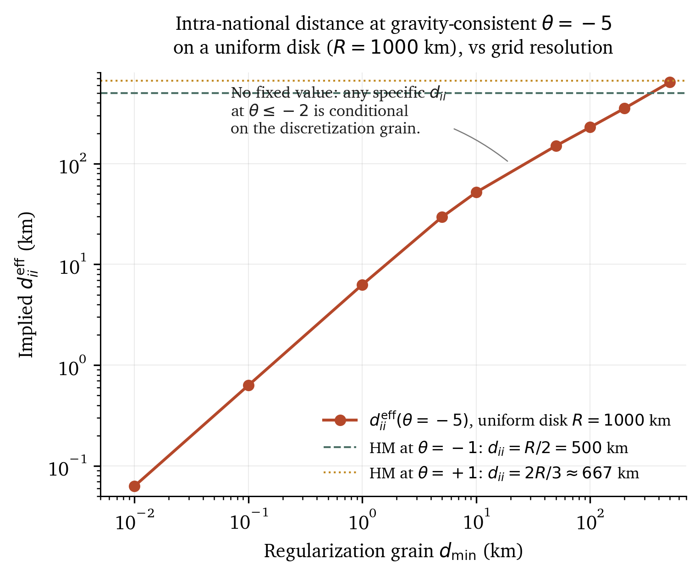
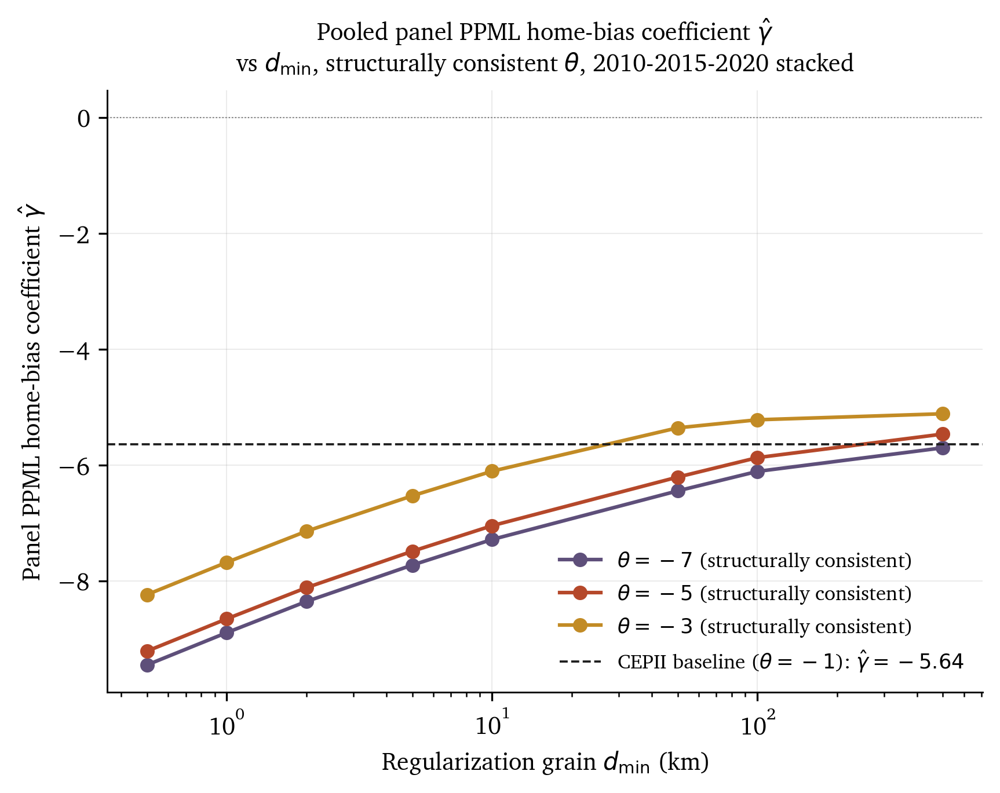

Every gravity regression published since 2005 uses a closed-form expression for intra-national distance that has a pole at the parameter value implied by the structural CES gravity model. At the empirically defensible elasticity of substitution $\sigma \in [4, 8]$ with the standard iceberg-cost exponent $\delta = 1$, the closed form is complex-valued and the underlying integral diverges in two dimensions.
CEPII's distw_harmonic evaluates the formula one unit
above the pole, at $\theta = -1$, and justifies the choice as
"the usual coefficient estimated from gravity models"
(Mayer and Zignago, 2011, p.~7). This is the reduced-form regression
slope, not the structural integration parameter. The conflation
originates in Head and Mayer (2002) themselves, on lines 502-505 of
their CEPII Working Paper, and has propagated into essentially every
applied gravity study for two decades without anyone documenting that
it produces a pole.
The border puzzle is the empirical finding (McCallum 1995) that intra-Canadian trade is roughly 22 times larger than trade between a Canadian province and a US state of similar size and distance. Anderson and van Wincoop (2003) reduced this multiplier to $\sim 5\times$ via the multilateral-resistance correction. A generation of gravity papers has used the AvW correction to estimate $\sim 5$-$10\times$ border-effect multipliers in applied work.
Every one of those regressions requires a number called intra-national distance: the typical distance from producers to consumers inside a country's borders. For the US, this is around 1,000 km. For Belgium, around 50 km. The number comes from CEPII's GeoDist database, built by Thierry Mayer and Soledad Zignago in 2005 and updated in 2011.
CEPII's intra-national distance is the Head-Mayer (2002) closed form evaluated at a parameter $\theta$:
The choice CEPII made: $\theta = -1$. The reason, in their own words, was that $\theta \approx -1$ is "the usual coefficient estimated from gravity models of bilateral trade flows." Mayer and Zignago (2011) state this on page 7 of their methodology paper.
But the $\theta$ that the gravity-regression coefficient estimates and the $\theta$ in the closed-form derivation are not the same quantity. The formula's $\theta$ comes from a structural CES expectation: $\theta = \delta (1 - \sigma)$, where $\delta$ is the iceberg-cost exponent and $\sigma$ is the elasticity of substitution. For empirically defensible $\sigma \in [4, 8]$ with $\delta = 1$, the structural $\theta$ is in $[-7, -3]$, far below CEPII's $-1$.
The closed-form expression has a pole at $\theta = -2$. The factor $2/(\theta+2)$ diverges. For $\theta < -2$, the base $2/(\theta+2)$ is negative and the exponent $1/\theta$ is a non-integer, so on the principal branch the expression takes complex values.
Direct numerical evaluation makes this concrete. For a country of radius $R = 1{,}000$ km:
| $\theta$ | $d_{ii}(\theta)$ (km) | Status |
|---|---|---|
| +1 | 666.7 | Arithmetic mean ($2R/3$) |
| -1 | 500.0 | CEPII evaluation (harmonic mean, $R/2$) |
| -1.5 | 384.9 | Last value HM 2002 tabulates |
| -1.99 | 9.5 | Approaching the pole |
| -2.0 | — | POLE |
| -3 | complex | $\sigma = 4, \delta = 1$ |
| -5 | complex | $\sigma = 6, \delta = 1$ |
| -7 | complex | $\sigma = 8, \delta = 1$ |
The structurally consistent values produce complex outputs. CEPII's $\theta = -1$ produces $R/2$, which is exactly the harmonic mean of the radial coordinate on a uniform disk. It is a perfectly defensible geometric statistic. It is not the structural CES expected pairwise distance at gravity-consistent $\sigma$.
The closed form is the analytical evaluation of an integral over the CES kernel on a uniform disk:
$$d_{ii}(\theta) = \left( \int_0^R \frac{2\pi r}{\pi R^2} \cdot r^\theta\, dr \right)^{1/\theta}$$For $\theta > -2$, the integral evaluates to $R^{\theta+2} / (\theta + 2)$, giving the closed form. For $\theta \leq -2$, the integral diverges at the lower limit ($r = 0$). Direct power-counting: the integrand is $r^{\theta + 1}$, which is integrable at $0$ only when $\theta + 1 > -1$, i.e., $\theta > -2$.
Proof sketch: the pairwise-distance density $g(r)$ on $[0, D]$ (where $D = \text{diam}(\Omega)$) has small-$r$ asymptotic $g(r) \sim r$ in 2D (linear in $r$ near zero, because we're in 2 dimensions; in $d$ dimensions the asymptotic is $r^{d-1}$). Then $\int r^\theta g(r) dr \sim \int r^{\theta + 1} dr$, which converges at $0$ iff $\theta + 1 > -1$. ∎
The dimension dependence matters. In 1D the divergence threshold is $\theta = -1$; in 2D it is $\theta = -2$; in 3D it is $\theta = -3$. The Head-Mayer formula is a 2D evaluation (uniform disk). The 1D analog, which Head and Mayer also derive in their paper for the bilateral case, has its own removable singularity at $\theta = -1$ that they evaluate around by setting $\theta = -1.0001$ in their numerical examples.
What happens if you take the integral seriously and try to evaluate it numerically at the structurally consistent $\theta$? You sample atoms within the disk and compute the empirical CES distance. You get a finite number, but the number depends on the spatial grain $d_{\min}$ (the smallest pairwise distance retained in the discretization). As you sample more finely, the number gets smaller without bound.

The scaling exponent of $d_{ii}^{\rm eff}$ with respect to $d_{\min}$ at small $d_{\min}$ is $\alpha(\theta) = (\theta + 2)/\theta$ in 2D. At $\theta = -3$, $\alpha = 1/3$ (weak scaling). At $\theta = -7$, $\alpha = 5/7$ (near-linear). The pole at $\theta = -2$ is the sign-change of the regularization-elasticity: above the pole the implied distance decreases with $d_{\min}$ (the standard convergent-integral case); below the pole the implied distance is locked to $d_{\min}$ and has no fixed point.
If the intra-national distance is a function of $d_{\min}$, then so is everything downstream. The home-bias coefficient in a gravity regression depends on $d_{\min}$ via the $\log d_{ii}$ regressor. The McCallum-Anderson-van Wincoop "border puzzle" multiplier inherits the regularization choice.
The primary empirical specification is the canonical Yotov-Piermartini-Monteiro-Larch (2016) panel PPML:
$$X_{ij,t} = \exp\Bigl( \alpha + \beta \log d_{ij,t} + \gamma \cdot \mathbf{1}\{i=j\} + \eta_{i,t} + \mu_{j,t} \Bigr) \cdot \varepsilon_{ij,t}$$
with origin-year ($\eta_{i,t}$) and destination-year ($\mu_{j,t}$)
fixed effects absorbed via the Correia-Guimarães-Zylkin (2020)
alternating-projection algorithm (implemented in Python via the
pyfixest library). Years 2010, 2015, and 2020 stacked.
Bilateral trade flows from BACI HS02 v202401b; pair-year covariates
from CEPII Gravity v202211; intra-national flows from the
Wei (1996) proxy. Total observations: 165,621 (including 27,000+
zero-trade rows that log-OLS cannot use).

| $d_{\min}$ (km) | $\hat\gamma$ at $\theta = -3$ | $\hat\gamma$ at $\theta = -5$ | $\hat\gamma$ at $\theta = -7$ |
|---|---|---|---|
| 0.5 | -8.233 | -9.208 | -9.446 |
| 1.0 | -7.675 | -8.650 | -8.888 |
| 5.0 | -6.527 | -7.485 | -7.723 |
| 10 | -6.102 | -7.043 | -7.281 |
| 100 | -5.215 | -5.868 | -6.106 |
| 500 | -5.112 | -5.462 | -5.699 |
| CEPII baseline ($\theta = -1$) | $-5.636$ (panel PPML), $+2.132$ (cross-section OLS) | ||
| $d_{\min}$ (km) | $\hat\gamma$ at $\theta = -3$ | OLS multiplier |
|---|---|---|
| 0.5 | -1.155 | $0.32\times$ |
| 1.0 | -0.365 | $0.69\times$ |
| 2.0 | +0.308 | $1.36\times$ (sign flip) |
| 10 | +1.601 | $4.96\times$ |
| 500 | +2.610 | $13.6\times$ |
| CEPII baseline ($\theta = -1$) | $+2.132$ | $8.43\times$ (McCallum-AvW) |
The two estimators disagree on the absolute level of $\hat\gamma$ (PPML estimates $\log \mathbb{E}[X|Z]$; OLS estimates $\mathbb{E}[\log X|Z]$; the Jensen-inequality wedge is large for high-variance trade flows) but agree on the direction: in both, the home coefficient moves more negative as $d_{\min}$ shrinks. The regularization-sensitivity finding is robust to estimator choice; the absolute level of the McCallum-AvW border-puzzle multiplier is not.
Three operational implications.
First, papers that report border-puzzle multipliers should report the spatial resolution at which intra-national distance was computed. A multiplier of $10\times$ at $d_{\min} = 100$ km and $5\times$ at $d_{\min} = 10$ km are not contradictory results; they are the same regression conditional on different measurement choices.
Second, replacing CEPII's static
distw_harmonic with a satellite-calibrated time-varying
alternative does not resolve the underlying inconsistency. It
substitutes one regularization choice for another. (This is the
methodological scaffolding for the companion
Gonchar-Helfrich satellite-distance panel.)
Third, the convention of treating intra-national distance as a fixed property of a country's geometry, rather than as a discretization choice, has misrepresented the literature's empirical content. Future work should acknowledge the structural-versus-reduced-form distinction in $\theta$.
The critique applies specifically to the Head-Mayer-CEPII tradition, which is the only structural-gravity tradition that constructs $d_{ii}$ from a CES spatial integral. Other traditions side-step the issue:
These traditions are immune to the critique because they don't construct the divergent object in the first place. The Head-Mayer-CEPII tradition is the dominant applied workhorse and is the one that inherits the pathology.
The pole has been sitting in the published literature for 24 years. The structural-versus-reduced-form $\theta$ conflation is on lines 502-505 of Head and Mayer (2002), in plain English. CEPII's choice of $\theta = -1$ has been documented since 2005. Nobody appears to have connected the dots.
Three reasons, in increasing order of severity:
1. The pole is invisible if you evaluate the formula at $\theta = -1$ (one unit above) and never push to the structurally consistent range. The applied literature has used the CEPII number as a number, not as an evaluation of an integral at gravity-consistent $\sigma$.
2. The symbol overloading was formalized by the original authors themselves. The Head and Mayer (2014) Handbook chapter uses $\theta$ for both the Pareto/Fréchet productivity shape parameter (positive) and the 2002 integration parameter (negative), and notes explicitly on line 1287: "we retain the symbol to emphasize the similarity in resulting terms." Once the notation is established, the conflation feels mechanical, not substantive.
3. The empirical implications are large enough that a reasonable referee would ask "if this is right, why hasn't it shown up?" The answer: because the literature has been comparing apples to apples (everyone uses CEPII's specific number, so the between-paper variation is small). The paper shows the regularization sensitivity by varying the spatial grain within a single specification, which the literature has not done.
The single line on lines 502-505 of Head & Mayer (2002): "Unfortunately for that formula, there are hundreds of gravity equation estimates of $\theta$ that show it is not equal to one. Rather our review of recent papers suggests that in most cases $\theta \approx -1$." This is the wrong-$\theta$ conflation. Head and Mayer used reduced-form regression estimates to parameterize a structural integral. The literature has followed.
The paper has six honest limitations and four follow-up projects. The limitations are documented in §7 of the PDF; a critical self-assessment is available here. The headline limitations:
Follow-up projects: